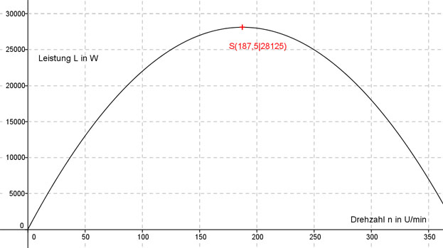

Aufgabe 124 Die Leistung L in W einer Turbine hängt von der Drehzahl n in U/min so ab: L = 300 n - 0,8 n2. Bei welcher Drehzahl ist die Leistung am größten? L(n) = - 0,8 n2 + 300n Dies ist die Funktionsgleichung einer nach unten geöffneten, gestauchten Parabel, deren höchster Punkt der Scheitelpunkt ist. L(n) = - 0,8 n2 + 300n |:(-0,8) L(n) - ------ = n2 - 375n 0,8 Quadratische Ergänzung: L(n) - ------ = n2 - 375n + 35 156,25 - 35 156,25 0,8 mit n2 - 375n + 35 156,25 = (n - 187,5)2 L(n) - ------ = (n - 187,5)2 - 35 156,25 |*(-0,8) 0,8 L(n) = -0,8(n - 187,5)2 + 28 125 Scheitelpunkt abgelesen: S(187,5|28 125) Die Scheitelpunktkoordinaten bedeuten: Bei einer Drehzahl von 187,5 U/min entsteht die größte Leistung L von 28 125 W. 